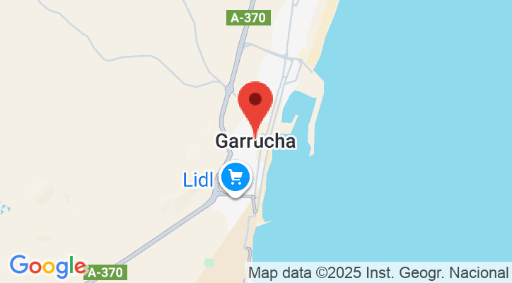

NUESTROS POSTRES

NUESTROS CAFÉS
Nuestra historia
La Panadería Doble J nació del sueño de dos hermanos, Juanky y Juanaco, que compartían una misma pasión: el pan recién hecho.
Todo comenzó en un pequeño horno familiar, donde las madrugadas se llenaban del aroma a masa recién horneada y café caliente.
Hoy seguimos horneando con la misma dedicación de nuestros inicios.
Doble J: donde cada bocado cuenta una historia.

correo: panaderiadoblej@gmail.com
teléfono: 644568599
dirección: Plaza los jardines celestiales
139 Calle al paraíso 04617